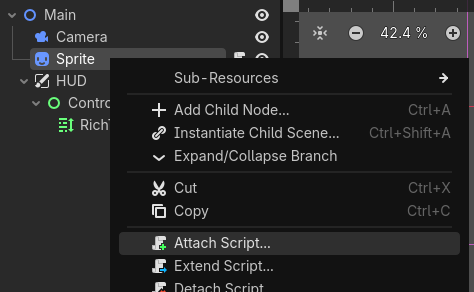
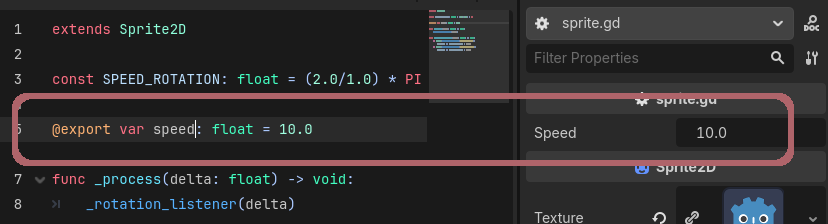

Now that you know your way around the editor, it's time to make something move. GDScript is how you tell nodes what to do.
GDScript is Godot's built-in scripting language. It reads a lot like Python -- indentation-based blocks, no semicolons, # comments -- but it's written specifically to work with Godot's nodes and scenes. A script is always attached to a node, and its whole job is to give that node behavior: react to input, move itself, talk to other nodes, respond when something happens.
You could use C# instead (Godot supports it natively), but GDScript is tightly integrated, loads faster, and is what most of the built-in documentation and community tutorials assume. That's what we'll use all semester.

The default template gives you this:
Try adding print("hello from " + name) inside _ready(), then press Play (top-right, from the tour). Check the Output tab in the bottom panel -- that's where print() statements show up.
The tour mentioned two Play buttons in the top-right; here's what each one actually does and where to look once something's running.
On a brand new project, there isn't a Main Scene set yet -- the first time you press F5, Godot will ask you to pick one. Choose the scene you've been working on. You can change this pick later under Project → Project Settings → Application → Run → Main Scene.
Once something's running:
If you press Play and nothing seems to happen, work through these in order: is the script actually attached to the node (check the Scene dock for the little script icon next to it)? Is that the node you meant to attach it to? And -- before anything else -- what does the Output/Debugger panel say? An error there is usually the fastest way to find out what's wrong.
Declare variables with var. GDScript supports optional static typing -- adding : float, : int, etc. isn't required, but it catches mistakes early and is good practice.
Add @export above a variable and it shows up as an editable field in the Inspector -- the panel from the tour that displays a selected node's properties.

This is genuinely useful, not just a nice-to-have: it lets you (or a teammate) tweak numbers like speed, health, or spawn rate directly in the editor while testing, without touching the script.
The tour showed the Scene dock's node tree -- your script lives on one of those nodes, and often needs to reach its neighbors: a child, a sibling, whatever. Two ways to do that:
$NodeName is shorthand for get_node("NodeName") -- both walk the scene tree to find a node relative to the one your script is on. Nested paths work too, e.g. $HUD/HealthBar. If a node in the Scene dock is renamed or moved, any $path pointing at it needs to be updated to match, so keep this in mind as your scenes grow.
Let's make your node move with arrow keys. Godot ships with default input actions already wired up (ui_left, ui_right, ui_up, ui_down), so there's nothing to configure yet -- just use them.
Input.get_vector(...) returns a direction as a 2D vector based on which keys are held -- (0,0) if nothing's pressed, up to length 1 in whatever direction. Multiplying by speed and delta turns that into "move this many pixels, this frame." Press Play and try it.
This is the same basic pattern -- read some input or decision, turn it into a direction, update position each frame -- you'll reuse (with fancier logic replacing the input read) once we get to steering behaviors and pathfinding.
Signals are how nodes notify each other that something happened, without needing a direct reference. A Button emits a pressed signal when clicked; an Area2D emits body_entered when something touches it.
Easiest way to connect one: select the node in the Scene dock, open the Node tab (next to Inspector), double-click the signal you want, and pick a node to receive it. Godot generates the function stub for you:
We'll use signals more once behavior gets event-driven (collisions, state changes). For now, just recognize the pattern -- it'll come up constantly.
Before moving on, make sure you can:
If all four feel solid, you're ready for pathfinding and search on graphs next.